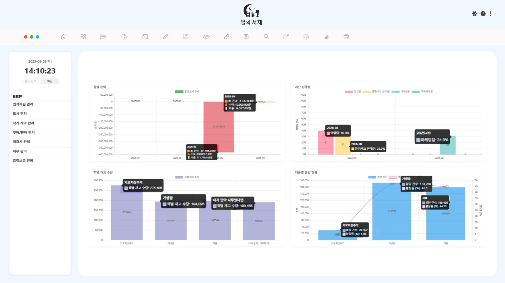

7년간 요리사로 일하며 제한된 자원 속에서도
원인 분석 → 대안 실행 → 피드백 개선 과정을
반복했습니다.
이 경험은 ERP·급여·재무 시스템 개발에도 그대로 이어졌고,
연동 오류 해결로 업무 처리 속도 50% 단축,
급여 모듈 개선 및 세금 자동화로 데이터 정합성 100% 확보라는 성과를 냈습니다.
ERP 프로젝트에서 발생한 오류와 개선 과제는 혼자서는 해결하기
어려웠습니다.
저는 팀원들과 문제를 빠르게 공유하고, 다양한 의견을 반영해 보너스
입력 실시간 반영, 트랜잭션 재설계 등
사용자 경험을 개선하는 기능을 완성했습니다.
새로운 환경에 빠르게 적응하는 것을 넘어,
환경을 더 나은 방향으로 바꾸는 개발자가 되고
싶습니다.
앞으로도 문제를 끝까지 추적하며,
수치와 성과로 증명할 수 있는 신뢰받는 개발자로
성장하겠습니다.

발주, 재고, 출고, 재무 모듈을 연동한 ERP 시스템 개발
스타트업 맞춤형 정기 결제/정산 관리 시스템
KH 정보교육원 KDT트레이닝 교육 기간 중 진행한 세미 프로젝트로 ERP를 구현했습니다.
배포 후 수정 ㅤㅤ
Github
기간: 2025.08.08 ~ 2025.09.12
인원: 5명 (팀 프로젝트)
기여도: BackEnd 55% | FrontEnd 30%
| 동시 사용자 | 평균 응답속도 | 최대 응답속도 | Error율 | TPS (초당 처리량) |
|---|---|---|---|---|
| Before | 297ms+ (지연 심각) | 500ms+ (Timeout 발생) | ❌ 100% | ❌ 처리 실패 |
| After (50명) | 17ms | 46ms | ✅ 0% | 1.8/sec |
| After (100명) | 16ms | 32ms | ✅ 0% | 3.4/sec |
| After (200명) | 14ms | 32ms | ✅ 0% | 6.7/sec |
| After (300명) | 13ms | 31ms | ✅ 0% | 10/sec |
| After (1000명) | 13ms | 38ms | ⚠️ 0.08% | 8.8/sec |
[재고 관리 최적화] Redis 캐시 적용 → 응답속도 55배 개선
| 동시 사용자 | 평균 응답(ms) Before | 평균 응답(ms) After | Error% | TPS |
|---|---|---|---|---|
| 1 | 39 | 3 | 0.0% | 85.5/sec |
| 50 | 38 | 2 | 0.0% | 8.8/sec |
| 100 | 40 | 1 | 0.0% | 17.9/sec |
| 500 | 55 | 1 | 0.0% | 83.5/sec |
| 1000 | 55 | 1 | 0.0% | 166/sec |
[재무 회계 관리] 급여·수입/지출·세금 납부 자동화
[계약 관리 모듈] 작가·도서·계약 트랜잭션 기반 동시 등록 및 데이터 정합성 확보
[발주/검수/출고 시스템] 전 과정 자동화 및 상태 기반 관리
[메인 대시보드 차트] Chart.js 시각화 및 Ajax 갱신
[캘린더 계약/휴가 일정 관리] FullCalendar 연동 및 계약 조회 / 등록 및 휴가 승인/차감 로직


출고 등록(newOutInven)은 정상 동작했지만,
출고 수정(updateOutInven) 요청 시 JMeter 부하 테스트에서
500 에러 100% 발생.
NullPointerException 발생 (stockQuantity 값 누락)1. 복합 인덱스 생성
-- Before (풀스캔 발생)
SELECT * FROM shipment WHERE inventory_no = ?;
-- After (복합 인덱스 적용)
CREATE INDEX idx_shipment_inven_sn
ON shipment (inventory_no, shipment_no DESC);
2. 출고 수정 쿼리 보완 (단일 행 보장)
-- Before (다건 수정 위험)
WHERE inventory_no = #{inventoryNo}
-- After (단건 수정 보장)
WHERE shipment_no = #{shipmentNo}
AND inventory_no = #{inventoryNo}
3. 재고 차감 원자화 처리 (음수 방지)
UPDATE inventory
SET quantity = quantity - #{editQuantity}
WHERE inventory_no = #{inventoryNo}
AND quantity - #{editQuantity} >= 0;
4. 서비스 계층 개선 (@Transactional)
// Before
Integer authorNo = mapper.getAuthorNo(bookNo);
Integer contractNo = mapper.getContractNo(bookNo);
BigDecimal royalty = mapper.getRoyaltyRate(bookNo);
// After
Map<String, Object> meta = mapper.getBookMeta(bookNo);
5. JMeter 부하 테스트 → 50 → 100 → 200 → 300 → 1000 users 단계별 시나리오 실행
| 동시 사용자 | 평균 응답(ms) | 최대 응답(ms) | Error% | TPS |
|---|---|---|---|---|
| 50 | 17 | 46 | 0.0% | 1.8/sec |
| 100 | 16 | 32 | 0.0% | 3.4/sec |
| 200 | 14 | 32 | 0.0% | 6.7/sec |
| 300 | 13 | 31 | 0.0% | 10/sec |
| 1000 | 13 | 38 | 0.08% | 8.8/sec |
/getInventoryBook API는 책별 재고 수량을 집계해서 보여주는 기능이다./getInventoryBook API는 단순 재고 현황 조회 기능 → 매 호출마다 DB 접근은 비효율적@Cacheable 적용, TTL(10분) 설정으로 데이터 신선도 보장1. 서비스 메서드에 캐시 적용
@Cacheable(cacheNames = "inventory:bookList", sync = true)
public List<Map<String, Object>> getInventoryBook() {
return mapper.getInventoryBook();
}
2. application.properties 설정
spring.data.redis.host=localhost
spring.data.redis.port=6379
spring.cache.type=redis
spring.cache.redis.time-to-live=600000 # 10분
3. Docker 환경에서 Redis 실행
docker run -d --name redis -p 6379:6379 redis:latest
4. JMeter 부하 테스트 → 1 → 50 → 100 → 500 → 1000 users 단계별 실행
| 동시 사용자 | 평균 응답(ms) Before | 평균 응답(ms) After | Error% | TPS |
|---|---|---|---|---|
| 1 | 39 | 3 | 0.0% | 85.5/sec |
| 50 | 38 | 2 | 0.0% | 8.8/sec |
| 100 | 40 | 1 | 0.0% | 17.9/sec |
| 500 | 55 | 1 | 0.0% | 83.5/sec |
| 1000 | 55 | 1 | 0.0% | 166/sec |
직원 수가 많아질수록 급여 등록을 개별 입력으로 처리하는 것은 비효율적이었고, 보너스/OT 입력 시 값이 테이블에 실시간 반영되지 않아 재입력·새로고침이 반복되는 문제가 발생.
급여 담당자 UX 개선 목표: “등록 → 지급 → 확인” 과정을 한눈에 직관적으로 볼 수 있도록 설계.
append().on("input") 이벤트로 세금·총액 즉시 재계산 → 테이블과 hidden input 값에 반영bonusMap에 저장해 재검색 시에도 값 유지@RequestBody로 리스트 수신<foreach> 구문으로 payroll 테이블에 다건 insert.statusField 업데이트 → 관리자 즉시 확인초기에는 발주 완료 즉시 재고에 등록되도록 구현했는데, 이렇게 하면 검수 과정이 생략되어 불량 수량이 누락되고 재무/재고 데이터가 왜곡되는 문제가 발생.
Spring Boot 3.5: 경량화 된 설정과 내장 Tomcat으로 빠른 개발 환경 구성, REST API 기반 서비스 개발에 활용
MyBatis: SQL 직접 제어를 통해 복잡한 트랜잭션(발주→재고→출고→재무) 처리 로직을 명확하게 구현
MySQL 8.0: 외래 키 · 체크 제약 조건 활용으로 데이터 정합성 확보, 트랜잭션 기반 회계 기록 관리
JSP / JSTL: 빠른 화면 개발과 MVC 패턴 기반 View 단 구현
jQuery / Ajax: 모달 기반 CRUD, 비동기 캘린더·차트 데이터 갱신에 활용
Chart.js: 월 별 수익/지출 추세, 품질검수 불량률 등 주요 지표를 시각화하여 대시 보드 구현
FullCalendar: 휴가 · 근태 일정 관리 달력 구현 (날짜 선택 → 모달 신청 → 즉시 반영)
Spring Security: 인증 사용자 세션 기반 접근 권한 제어 (관리자 전용 메뉴/기능 분리)
Redis : 조회 성능 최적화에 활용 @Cacheable+ TTL(10분) 캐시 적용으로 DB 부하 감소 및 응답 속도 55배 개선
JMeter : 성능 및 부하 테스트 도구 50 → 1000명 동시 사용자 시나리오 테스트를 통해응답 시간 · TPS · Error율 지표를 정량적으로 검증.
2025.06 ~ 2025.12
@ AWS 클라우드 기반 DevOps 개발자 양성 과정
2021.03 ~ 2025.02
@ 조리·서비스 경영학과
자격증